does not require information about the X-ray source spectrum and
specimen composition.
is limited to a second-order fit using the dialog's
beam-hardening slider 0 to 1 position "W" where τcorr
= (1-W)(τobs) + (W)(τ2obs)
(note that there is no constant term).
can qualitatively suppress cupping artifact in most images.
can, in reconstructions with two known materials, obtain single effective
energy by scaling the image so that the X-ray MuLin Lookup and the X-ray Ratio Lookup plugins give the same result. If more than two materials are present, it may not be possible
to obtain a consistent energy result.
is model-based and requires information about the X-ray source spectrum and
specimen composition.
requires user selection of the X-ray energy that gives the best fit between specimen and
model attenuations.
can semi-quantitatively suppress cupping artifact in images that require a higher order fit.
Both the CT_Recon slider and the Linearization Fitter give improved estimates of linear attenuation when the X-ray spectrum is made more monochromatic by increasing the filtration. The Scanner Setup plugin can help optimize the imaging conditions. In real CT systems it may be possible to reduce the attenuation error below the S/N of the measurement.
It is important to note that the validity of
a linearization correction can vary significantly depending on the
specimen spatial and compositional heterogeneity. You can use your
images or the ImageJ drawing tools and the Material Tagger plugin
to construct test cases to explore the limitations of linearization.
For a more detailed discussion of the correction of beam hardening
artifacts by linearization with references to other methods see for
example Van Gompel et.al.
Example-1: Linearization using the CT_Recon Slider of a two material tubular specimen.
Shows the interactive use of the CT_Recon beam hardening slider to suppress cupping artifact.
Demonstrates the attenuation error resulting from the arbitrary linearization.
Uses known material compositions to identify the effective X-ray energy and correct the attenuations.
Example-2: Linearization using the Fitter and Apply Plugins on the same specimen as example-1.
Compares the reconstructed image attenuations to a model "tag image" of the specimen structure and composition.
Demonstrates how the quality of the fit varies with effective X-ray energy.
Applies the user-selected best fit to the sinogram using the Apply Linearization plugin.
Shows consistent effective X-ray energy for the two components similar to example-1.
Example-3: Linearization using the CT_Recon Slider on a three material complex specimen
The specimen contains two strongly X-ray absorbing materials.
Uses the Scanner Setup plugin to select imaging conditions (Copper vs Tin filter)that will result in two different levels of beam hardening.
Shows the result obtained using the NIST_XCOM.xlam and
Solver Excel Addins to estimate the effective X-ray energy and scaling for the Slider=0 reconstruction
Uses attenuation rather than effective X-ray energy as the error metric.
Gives a summary of the solver results for two slider positions for both configurations.
Shows that the effective X-ray energies are consistent with the detected X-ray source spectra
Concludes that the second scan produces accurate attenuatrions and was probably over-filtered.
Example-4: Linearization using the Fitter and Apply Plugins on the same specimen as example-3.
Uses attenuation rather than effective X-ray energy as the error metric.
Achieves the same results for Copper and Tin filtered example-3 directly by identifying the optimal linearizing polynomial.
Shows the improved image quality from a 3rd order fit.
Example-1: Linearization using the CT_Recon Slider of a two material tubular specimen.
Simulation: Stainless steel tube 0.46cm OD x 0.38cm ID plugged with quartz
The tag image was created using ImageJ drawing tools and the Material Tagger plugin
The Scanner Setup plugin was used to select conditions that would produce significant beam hardening.
Source: W target 160KV, 100ma,
Filter: 0.01cm Cu
Detector: 0.01cm CsI.
The CT_Recon's "Reconstruct Test Slice" and the ImageJ live line-plot tool were used to obtain a flat profile across the tube wall(red
line).
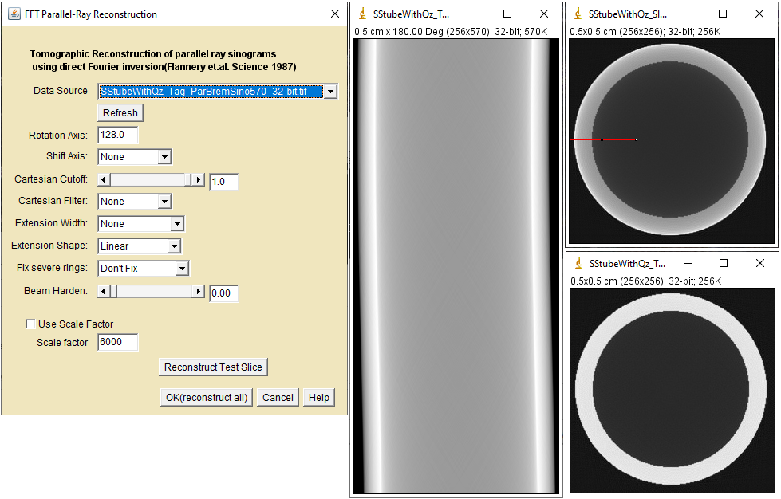
CT Recon Using Beam Hardening Slider Dialog
settings(left), Sinogram(center), Reconstructions(right): Slider=0(top) and
Slider=0.66(bottom)
The plot below shows how the reconstructed tube profile along the red line changes with
slider position. The best profile was obtaind at a slider position =
0.66.
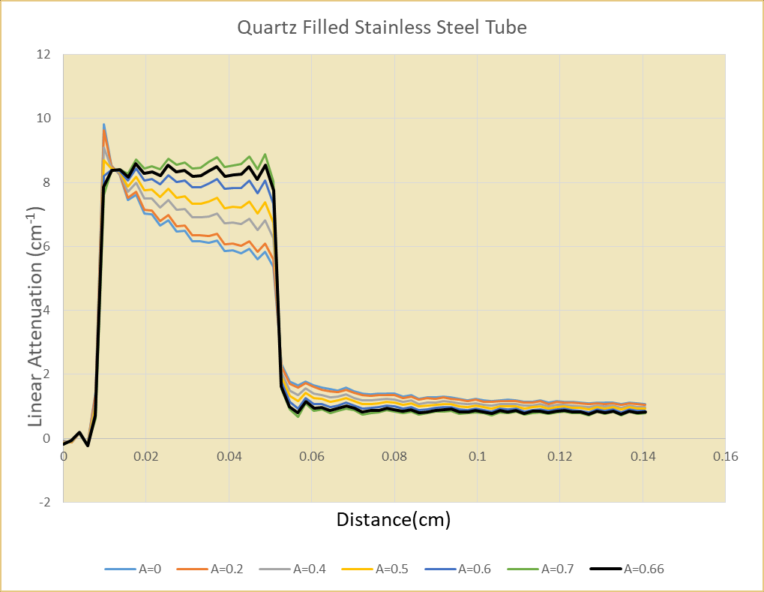
Profiles along the red line for several slider values
In this example we know the composition and density of the materials. We can obtain effective energies from the quartz and tube linear attenuations using the X-ray MuLin Lookup and X-ray Ratio Lookup plugins. The first row in the table below shows that the energies are different but are brought into agreement in the second row by scaling the μlin values by a constant.
Effective energy before and after image scaling
Scale Factor
Tube μlin
Quartz μlin
Tube Eff keV
Qz Eff keV
Qz:Tube μlin Ratio Eff keV
1.000
8.331
0.805
59.6
51.9
67.3
0.746
6.216
0.600
67.4
67.4
67.4
This scaling method is probably unique the two material systems. Example-3 shows that scaling will not always produce a clear result but can be used to evaluate and minimize attenuation error.
Example-2: Linearization using Fitter and Apply Plugins on a Simple Sample
We repeat Example-1 using a model-based second order beam
hardening correction. See the
Linearization
page for use details
The images look the same as Example-1 and are not shown again here. The animation below illustrates how the fit changes with X-ray energy. The higher attenuations are dominated by the tube and the lower attenuations are a mix of tube and quartz. Both are well centered around the fit line at 67keV.
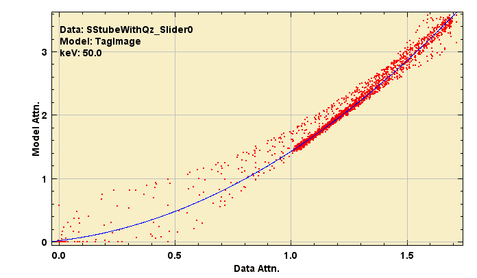
Linearization Fitter results at three X-ray energies. The best second order fit is obtained at 67keV
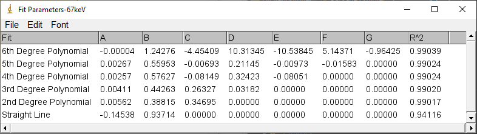
Fit parameters at 67keV
Effective energy using Linearization fitter at 67keV
Tube μlin
Quartz μlin
Tube Eff keV
Qz Eff keV
Qz:Tube μlin Ratio Eff keV
6.255
0.587
67.14
68.94
65.35
In this example we get an effective energy that is consistent with Example-1 after scaling. We note that the R2 of the fit is not very sensitive the effective energy estimate. A higher order fit at the high attenuation data may give a slightly better result. In general, lower order fits are less sensitive to noise.
Example-3: Filtration and Linearization of a Structured Sample
How accurate are reconstructed attenuations after linearization?
The attenuations are correct in CT slices obtained using monochromatic X-rays. Polychromatic X-rays produce beam hardened images that can be arbitrarily linearized to reduce the cupping artifact but the attenuations will most likely be incorrect. As the filtering of a conventional X-ray source increases, the beam becomes less polychromatic, attenuation errors decrease but the scan times increase.
The composition of CT specimens is often unknown. In that case, the cupping artifact can be suppressed but we are stuck with the incorrect attenuations. When the composition of the materials in the specimen is known, then the reconstructed image can be adjusted to minimize the errors. If the specimens are consistent as in QC/QA, then the filtering and linearization can be optimized a to give images of known attenuation accuracy in the shortest amount of time.
The simulated example image was created using ImageJ drawing tools and the Material Tagger plugin. It is relatively large and contains strong x-ray absorbers.
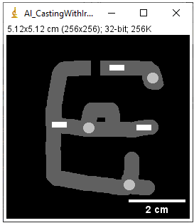
Simulated slice of Aluminum Casting with round iron(light gray) and rectangular brass(white) pins
We use the Scanner Setup plugin and the strongly absorbing brass pins to select scanning conditions that should produce different levels of beam hardening.
Sample
Path(cm)
Src KV
Filter
Filter(cm)
Detector
Detector(cm)
Tau
BH%
Eff(keV)
Red Brass
0.8
245
Copper
0.5
BaF2
0.1
3.07
16.4
160
Red Brass
0.8
245
Tin
0.5
BaF2
0.1
2.5
7.8
180
Scanner Setup Results
In this example,
a higher source accelerating potential was used to produce x-ray energies that penetrate the brass.
a thick, strongly absorbing detector was needed to improve high energy response.
the first setup used a copper filter and produced ~16% beam hardening.
the second setup used tin filter and produced ~8% beam hardening.
How close is the attenuation to the model at each setup when reconstructed with and without the CT-Recon plugin slider?
First, a few sample calculations. With the CT_Recon slider set to 0, we use NIST_XCOM.xlam and
Solver Excel Addins to identify the X-ray energy that minimizes the RMS %Err without any beam hardening correctionand obtain 147keV and 9.6% error.
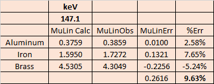
Excel solving for best energy fit
Example 1 showed that scaling the image can improve the fit. We again use the Solver to identify the X-ray energy and scale factor that minimize the RMS %Err without any beam hardening correction(slider=0) and obtain a small improvement.
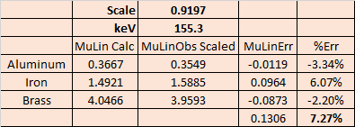
Excel solving for best scaling and energy fit
The table below summarizes the best keV and scale fits for the both setups with and without the slider.
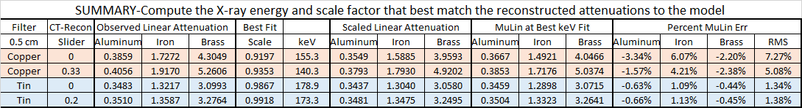
Excel solving for best scaling and energy fit
We see in the copper filtered image that using the slider to reduce the cupping artifact still results in an 5% RMS error in attenuation coefficient. The reduction in beam hardening using the tin filter is sufficient to reduce the error to about 1.3%, which is below the S/N in most reconstructions. We could probably reduce the thickness of the tin filter to reduce the scan time and use the slider to still obtain a good result. The best fit X-ray energies are consistent with the detected X-ray intensity distributions shown below.
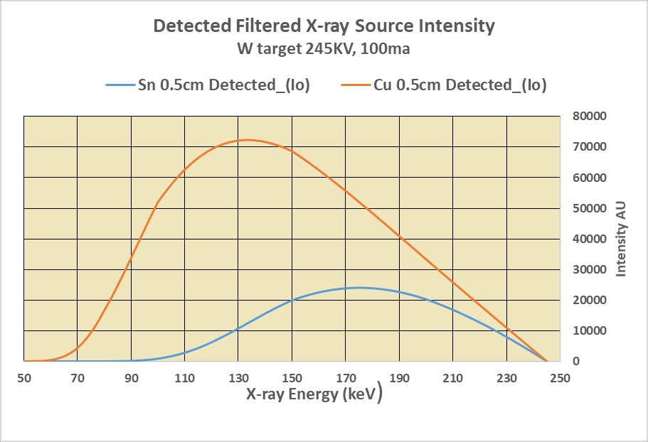
Detected X-ray Intensity Distributions
Sample reconstructions for the imaging conditions in this example
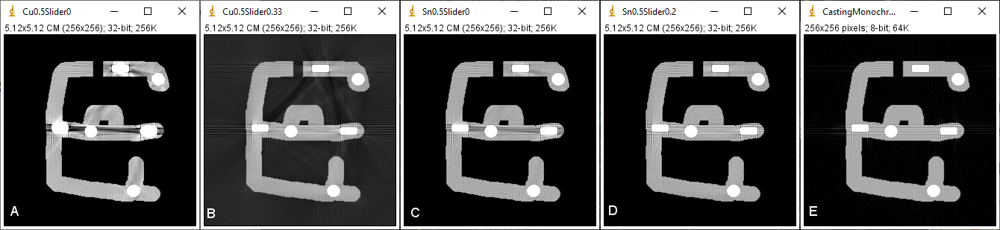
Polychromatic Reconstructions: A-Cu Filter Slider 0, B-Cu Filter Slider 0.33, C-Sn Filter Slider 0, D-Sn Filter Slider 0.20, E-monochromatic 150keV The reconstructed gray scale is adjusted to be uniform between images and to highlight residual artifacts1.
Image D is of the same quality as the monochromatic image E and has attenuations that are within 1.3% of for the Solver effective energy.
1. The boundaries of the rectangular brass pins are perfectly aligned with the 90degree projection and are not band-limited giving rise to Gibbs noise in the monochromatic reconstruction.
Back to top
Example-4: Using the Linearization Fitter Plugin
This example uses the same simulated structure and projection conditions as example-3. The sinograms were reconstructed using the CT Recon Parallel Beam plugin with the slider set 0.
The ImageJ macro below creates a stack of fitter plots to demonstrate how the quality of the fit changes with effective X-ray energy.
Copper Filtered Results
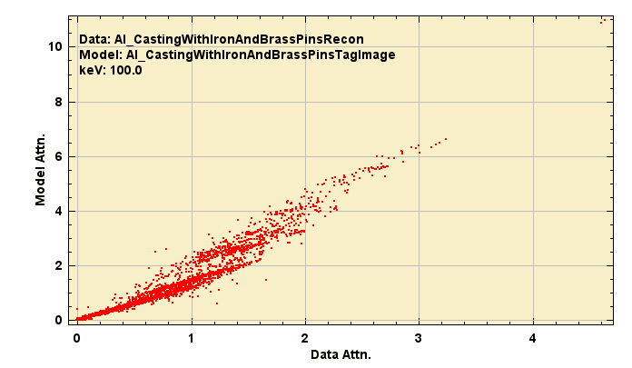
Fitter Results for Copper Filter from 100 to 250keV The minimum R2 fit occurs at 150 keV
Note the two points at the top right of the plot corresponding
to the attenuation overlap of two brass and one iron pin.
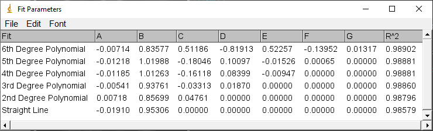
Linearization Fitter Results for Cu Filtered data The minimum R2 fit occurs at 150 keV
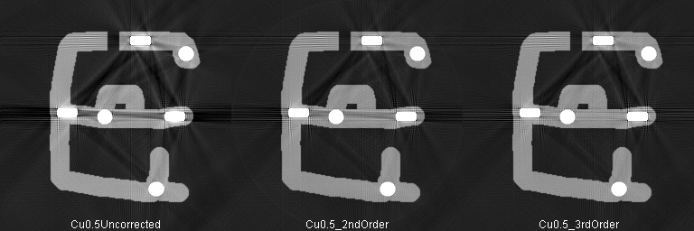
Cu Filtered Reconstructions at same gray scale Scale was selected to highlight artifacts. The third order fit better approximates the attenuation overlap of the brass pins.
The table below shows that although the image quality is improved by applying the fit, the attenuation error is about 8%. The detected X-ray spectrum using the copper filter is too polychromatic to obtain accurate attenuations.
Correction
Aluminum
Iron
Brass
RMS Err %
2nd Order
2.93
-7.72
-0.83
8.30
3rd Order
2.49
-7.31
-0.10
7.72
Copper Filter Attenuation error
Tin Filtered Results
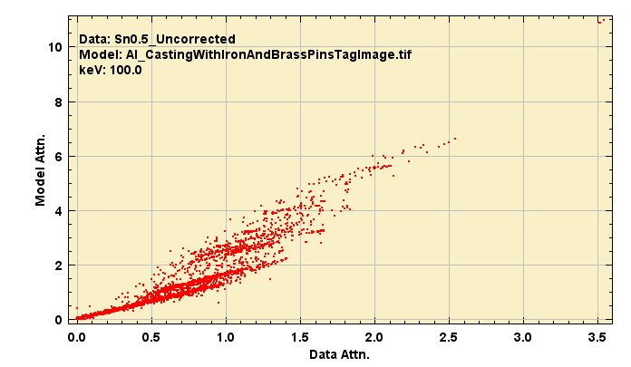
Fitter Results for Tin Filter from 100 to 250keV The minimum R2 fit occurs at 177 keV
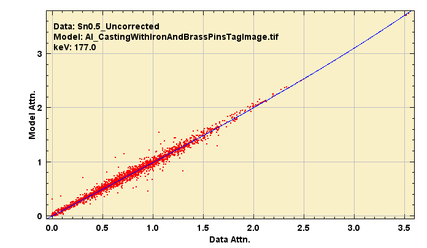
3rd Order Fit Results for Tin Filter at 177keV Note the two points at the top right of the plot corresponding
to the attenuation overlap of two brass and one iron pin.
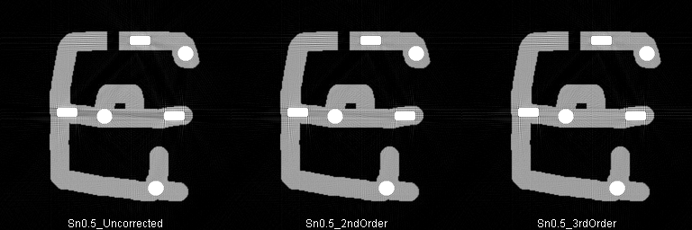
Sn Filtered Reconstructions at same gray scale Scale was selected to highlight artifacts. The third order fit better approximates the attenuation overlap of the brass pins.
The table below shows that the image quality is improved by applying a higher order fit and that the attenuation error is about 1.5%, below the ~5% S/N of routine CT scans. The detected X-ray spectrum using the tin filter is sufficiently monchromatic to obtain accurate attenuations and reduce streak artifacts.